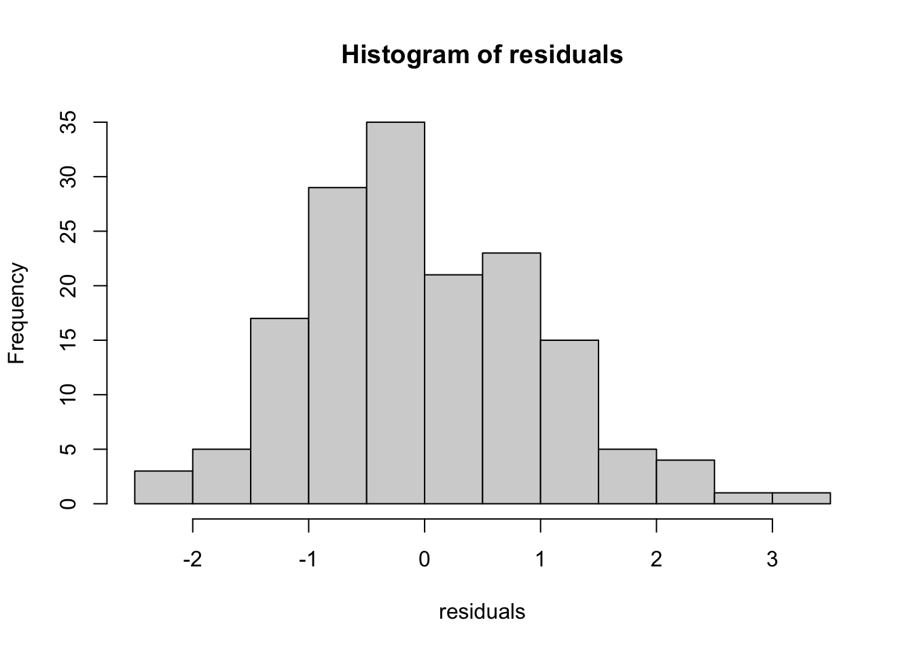
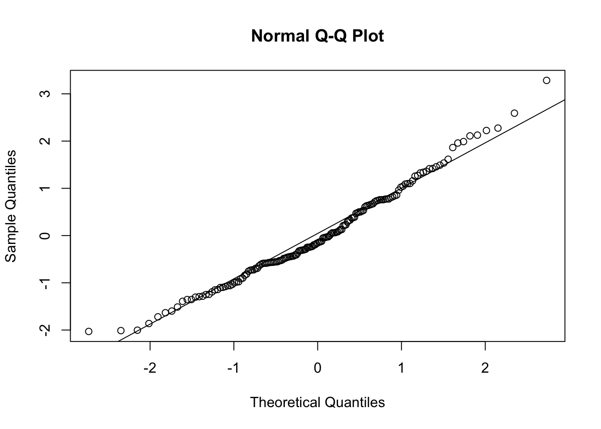
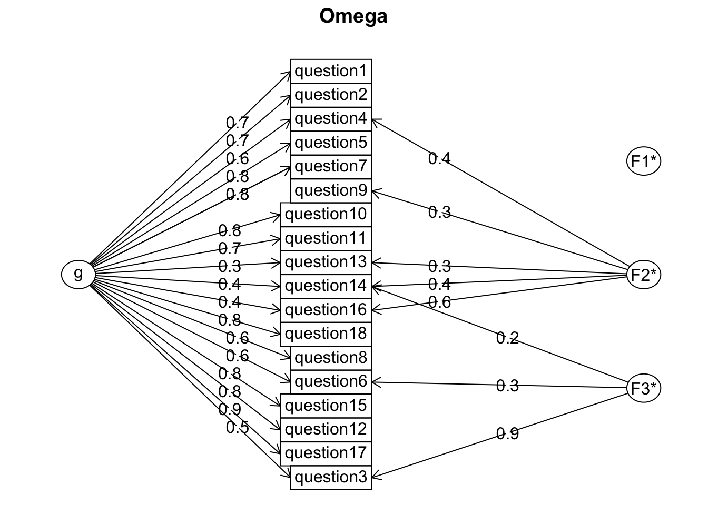
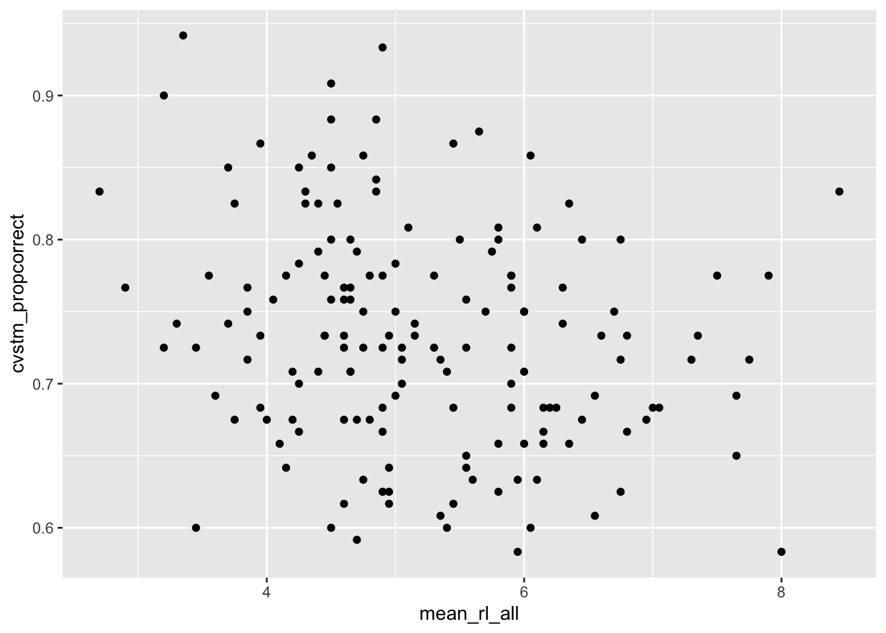
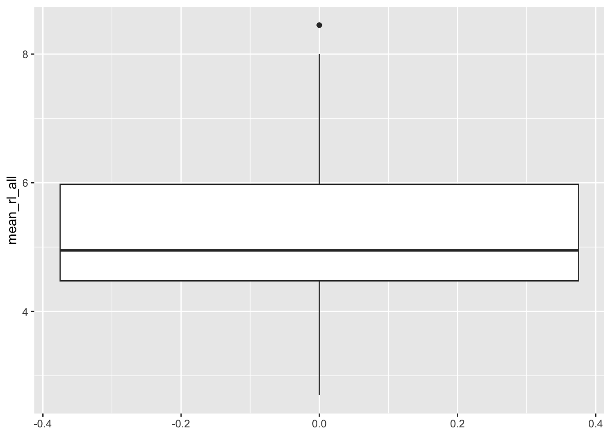
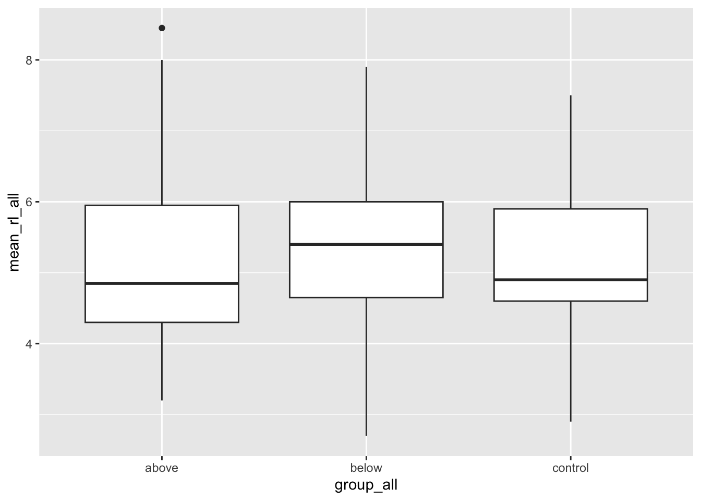
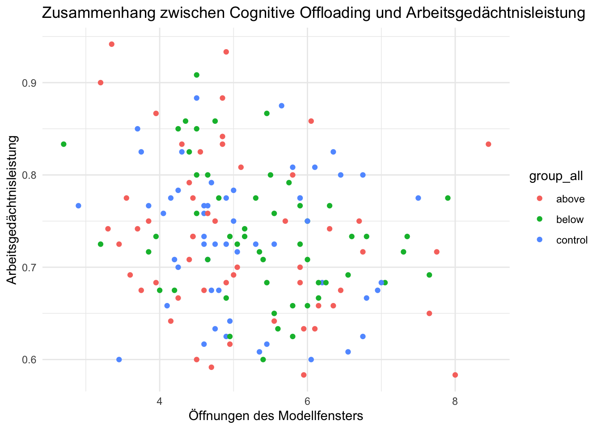

library(tidyverse)
library(here)
dat_full <- read_csv(here("data/raw/dat_full.csv"))Hands On – Tidy & Transform / Analyze (Einheiten 9 und 10)
Bei Bedarf finden sich hier nochmal die Slides zur EH9:
Und hier die Slides zur EH10:
Lernziele
✅ dplyr: Repetition
✅ Duplizierte Werte entfernen
✅ Long & Wide Transformationen
✅ Datenqualitätsindkatoren berechnen
✅ Abbildungen für Ausreisseranalysen
✅ Tabellen
Important
Für die heutigen Übungen benötigen wir dat_full! Lese diesen ein.
Duplizierte Werte entfernen
In manchen Datensätzen kann es vorkommen, dass Werte mehrfach auftreten (z.B. wenn eine ID mehrmals vorkommt). Um dies zu bereinigen, müssen wir zunächst die Duplikate identifizieren und sie anschliessend bearbeiten oder entfernen.
Im nächsten Schritt duplizieren wir exemplarisch drei zufällige Zeilen aus unserem Datensatz dat_full. Diese künstlich erzeugten Duplikate werden wir danach wieder bereinigen.
Führe diesen Code-Chunk aus: Danach sollte dein dat_full 162 Beobachtungen enthalten.
set.seed(123)
dup_rows <- dat_full |>
slice_sample(n = 3)
dat_full <- bind_rows(dat_full, dup_rows)Es gibt mehrere Arten und Weisen, Duplikate zu identifizieren. Verwende die dplyr-Funktion count(), um die einzelnen IDs zu zählen. Gib dir anschliessend mit filter() diejenigen aus, die mehr als einmal vorkommen.
dat_full |>
count(XXXX) |>
filter(XXX)
NoteLösung
dat_full |>
count(code) |>
filter(n > 1)# A tibble: 3 × 2
code n
<dbl> <int>
1 14 2
2 50 2
3 159 2Entferne die Duplikate wieder, indem du z.B. unique() auf den Datensatz anwendest. unique() entfernt vollständig identische Zeilen und behält nur eine davon.
NoteLösung
dat_full <- unique(dat_full)
Note
Alternative: Falls du Duplikate nur auf Basis einer bestimmten Variable (z.B. ID) entfernen möchtest, kannst du duplicated() verwenden. Dadurch bleibt pro ID nur die erste Zeile erhalten.
dat_full <- dat_full[!duplicated(dat_full$code), ]dplyr: Code korrigieren und verbessern
Dieser Code funktioniert nicht. Korrigiere ihn. Achte dabei auf Syntaxfehler.
dat_full |>
select(code, post, strategies)
filter(strtegies = "1")
NoteLösung
dat_full |>
select(code, post, strategies) |>
filter(strategies == 1)# A tibble: 58 × 3
code post strategies
<dbl> <dbl> <dbl>
1 1 7 1
2 2 2.1 1
3 5 6.3 1
4 9 7 1
5 13 4.9 1
6 15 6.4 1
7 17 1.3 1
8 18 3.7 1
9 20 1.8 1
10 21 4.3 1
# ℹ 48 more rowsDieser Code funktioniert, ist jedoch sehr umständlich und ineffizient. Verwende dplyr-Funktionen, um ihn kürzer und übersichtlicher zu gestalten.
dat_full |>
summarise(
Gesamtmittelwert = mean(
c(
question1, question2, question3, question4, question5,
question6, question7, question8, question9, question10,
question11, question12, question13, question14, question15,
question16, question17, question18
)
)
)
NoteLösung
dat_full |>
summarise(
Gesamtmean = mean(across(starts_with("question")))
)Warning: There was 1 warning in `summarise()`.
ℹ In argument: `Gesamtmean = mean(across(starts_with("question")))`.
Caused by warning in `mean.default()`:
! argument is not numeric or logical: returning NA# A tibble: 1 × 1
Gesamtmean
<dbl>
1 NAWide → Long: Daten umformen
Übungen zur Datenkonversion
📖Einführung in R - Kapitel 3.1.3
In vielen Datensätzen liegen Messungen nebeneinander in mehreren Spalten vor (Wide-Format). Für viele Analysen ist es jedoch sinnvoller, diese Daten in ein Long-Format zu überführen.
👉 In dieser Aufgabe wandelst du mehrere Variablen zur Leistungseinschätzung (Pre1 - Post) in ein Long-Format um.
Schritt 1: Daten verstehen
Schau dir zuerst die relevanten Variablen im Datensatz an:
dat_full |>
select(code, pre1, pre2, pre3, pre4, post) |>
head()👉 Überlege dir: Was stellen die Variablen pre1 bis pre4 und post dar? Warum könnte es sinnvoll sein, diese in eine gemeinsame Struktur zu bringen?
Schritt 2: Wide → Long Transformation
Wandle die Variablen pre1, pre2, pre3, pre4 und post in ein Long-Format um.
👉 Dein Ziel: Eine neue Spalte, die angibt, zu welchem Zeitpunkt die Messung gehört. Eine zweite Spalte mit dem jeweiligen Wert der Einschätzung
👉 Hinweis: Du musst in pivot_longer() drei Dinge festlegen: Welche Spalten umgeformt werden sollen, Wie die neue Spalte für den Zeitpunkt heissen soll, Wie die Spalte mit den Werten heissen soll
👉 Speichere das Ergebnis in einem neuen Datensatz df_long.
df_long <- dat_full |>
pivot_longer(
cols = XXXX,
names_to = "XXXX",
values_to = "XXXX"
)Schritt 3: Ergebnis prüfen
Schau dir den neuen Datensatz an:
df_long |>
head()👉 Fragen zur Kontrolle: Wie viele Zeilen hat der Datensatz jetzt im Vergleich zu vorher? Was steht in der neuen Spalte für den Messzeitpunkt? Wie hat sich die Struktur der Daten verändert?
NoteLösung
df_long <- dat_full |>
pivot_longer(
cols = c(pre1, pre2, pre3, pre4, post),
names_to = "time_rating",
values_to = "rating"
)Weiterführende Übungen zur Datenkonversion
Im vorherigen Schritt hast du die 5 Messzeitpunkte in ein Long-Format umgewandelt. Das war nur für Übungszwecke, d.h. wir brauchen diesen Long-Datensatz nicht für unsere weiteren Analysen.
Nun übst du das Vorgehen noch einmal mit nur zwei Messzeitpunkten - den resultierenden Datensatz werden wir für unsere weiteren Analysen benötigen (Berechnung der 2x3 ANOVA).
Schritt 4: Zwei ausgewählte Messzeitpunkte ins Long-Format bringen
Wandle den Datensatz noch einmal in ein Long-Format um, dieses Mal aber nur auf Basis der Spalten pre1 und pre4. Dies wird zu einem späteren Zeitpunkt für die Reanalyse der 2x3 ANOVA von Grinschgl et al. (2020) benötigt!
👉 Ziel: Die beiden Messzeitpunkte sollen in einer gemeinsamen Spalte stehen (time_rating) Die zugehörigen Werte sollen in einer zweiten Spalte gespeichert werden
👉 Speichere das Ergebnis erneut in df_long.
df_long <- dat_full |>
pivot_longer(
cols = XXXX,
names_to = "XXXX",
values_to = "XXXX"
)
NoteLösung
df_long <- dat_full |>
pivot_longer(
cols = c(pre1, pre4),
names_to = "time_rating",
values_to = "rating"
)Schritt 5: Messzeitpunkt als Faktor definieren
Für viele Analysen soll die Variable mit den Messzeitpunkten nicht als Zeichenvariable, sondern als Faktor vorliegen.
Wandle deshalb die Spalte time_rating in einen Faktor um.
df_long$time_rating <- XXXX(df_long$time_rating)
NoteLösung
df_long$time_rating <- factor(df_long$time_rating)
Note
Warum ist das sinnvoll? Ein Faktor signalisiert R, dass es sich bei time_rating um eine kategoriale Variable handelt. Das ist für viele statistische Analysen wichtig, damit die Gruppen korrekt interpretiert werden. Das Umwandeln in einen Faktor muss erneut ausgeführt werden, wenn R neu geöffnet wird.
Schritt 6: Long-Datensatz speichern
Speichere den Long-Datensatz als .csv-Datei ab. Diesen Datensatz werden wir in den nächsten Woche benötigen!
👉 Achte darauf, dass keine zusätzliche Spalte mit Zeilennummern gespeichert wird.
write.csv(df_long, "processed/data_long.csv", row.names = XXXX)
NoteLösung
write.csv(df_long, "processed/data_long.csv", row.names = FALSE)Schritt 7: Zurück ins Wide-Format
Wandle den Datensatz nun mit pivot_wider() wieder zurück ins Wide-Format. Dies dient nur Übungszwecken.
👉 Verwende dabei: names_from, um festzulegen, aus welcher Spalte die neuen Spaltennamen kommen values_from, um festzulegen, welche Werte in diese Spalten geschrieben werden
👉 Speichere das Ergebnis in einem neuen Datensatz df_wide.
df_wide <- df_long |>
pivot_wider(
names_from = XXXX,
values_from = XXXX
)
NoteLösung
df_wide <- df_long |>
pivot_wider(
names_from = time_rating,
values_from = rating
)Datenqualität und erste Diagnostik
In diesem Abschnitt untersuchst du verschiedene Eigenschaften der Daten. Dazu gehören:
- die Form von Verteilungen
- die Prüfung von Residuen in einem Regressionsmodell
- die interne Konsistenz eines Fragebogens (Skalenreliabilität)
- graphische Darstellung von Verteilungen und Zusammenhängen
Verteilungen beschreiben: Skewness und Kurtosis
Mit Schiefe und Kurtosis kann beschrieben werden, wie stark eine Verteilung von der Normalverteilung abweicht.
Schritt 1: Paket laden
Für die folgenden Analysen benötigst du das Paket psych.
NoteLösung
# install.packages("psych")
library(psych)
Attaching package: 'psych'The following objects are masked from 'package:ggplot2':
%+%, alphaSchritt 2: Schiefe und Kurtosis gruppenweise berechnen
Berechne für die Variable „Öffnungen des Modellfensters“ (mean_rl_all) die Schiefe und Kurtosis getrennt für die drei Gruppen.
👉 Verwende dafür group_by() und summarise().
summary_table <- dat_full |>
group_by(XXXX) |>
summarise(
schiefe = XXXX(mean_rl_all),
kurtosis = XXXX(mean_rl_all)
)
summary_table
NoteLösung
summary_table <- dat_full |>
group_by(group_all) |>
summarise(
schiefe = psych::skew(mean_rl_all),
kurtosis = psych::kurtosi(mean_rl_all)
)
summary_table# A tibble: 3 × 3
group_all schiefe kurtosis
<chr> <dbl> <dbl>
1 above 0.715 -0.0561
2 below 0.106 -0.0658
3 control 0.318 -0.619
Note
Zur Einordnung: Eine Schiefe nahe 0 spricht für eine annähernd symmetrische Verteilung. Eine Kurtosis nahe 3 spricht dafür, dass die Verteilung in ihrer Wölbung ungefähr einer Normalverteilung ähnelt.
Residuen eines Regressionsmodells prüfen
Bei linearen Regressionsmodellen prüft man häufig, ob die Residuen ungefähr normalverteilt sind.
📖Siehe auch: Normalverteilung der Residuen bei der Regression in R testen
Schritt 1: Regressionsmodell berechnen
Berechne ein lineares Regressionsmodell, in dem Cognitive Offloading (mean_rl_all) durch die Arbeitsgedächtnisleistung (cvstm_propcorrect) vorhergesagt wird.
reg_fit <- lm(XXXX ~ XXXX, data = dat_full)
NoteLösung
reg_fit <- lm(mean_rl_all ~ cvstm_propcorrect, data = dat_full)Schritt 2: Standardisierte Residuen speichern
Speichere die standardisierten Residuen des Modells mit rstandard().
residuals <- XXXX(reg_fit)
NoteLösung
residuals <- rstandard(reg_fit)Schritt 3: Histogramm der Residuen
Stelle die standardisierten Residuen in einem Histogramm dar.
hist(XXXX)
NoteLösung
hist(residuals)
👉 Frage zur Interpretation: Wirkt die Verteilung der Residuen im Histogramm ungefähr symmetrisch und glockenförmig?
Schritt 4: QQ-Plot der Residuen
Erstelle zusätzlich einen QQ-Plot und ergänze die Referenzgerade.
qqnorm(XXXX)
qqline(XXXX)
NoteLösung
qqnorm(residuals)
qqline(residuals)
👉 Frage zur Interpretation: Liegen die Punkte ungefähr auf der Geraden, oder gibt es deutliche Abweichungen?
Skalenreliabilität
Nun prüfst du die Interne Konsistenz eines Fragebogens.
📖 Psychometrics in R & Björn Walther
Schritt 1: Relevante Items auswählen
Speichere alle Variablen des MMQ in einem neuen Data Frame mmq_vars.
👉 Wähle dazu alle Spalten aus, die mit “question” beginnen.
mmq_vars <- dat_full |>
select(XXXX)
NoteLösung
mmq_vars <- dat_full |>
select(starts_with("question"))Schritt 2: Cronbach’s Alpha berechnen
Verwende die Funktion alpha() aus dem Paket psych, um Cronbach’s Alpha für den Fragebogen zu berechnen.
👉 Achte in der Ausgabe besonders auf den Wert raw_alpha. Dieser sollte mit dem Wert in Grinschgl et al. (2021) übereinstimmen!
psych::alpha(XXXX)
Warning
Achtung: Wenn du das Paket ggplot2 geladen hast, kann es in seltenen Fällen zu Namenskonflikten kommen. Verwende deshalb hier sicherheitshalber psych::alpha().
NoteLösung
psych::alpha(mmq_vars)
Reliability analysis
Call: psych::alpha(x = mmq_vars)
raw_alpha std.alpha G6(smc) average_r S/N ase mean sd median_r
0.93 0.93 0.94 0.42 13 0.0082 2.5 0.68 0.44
95% confidence boundaries
lower alpha upper
Feldt 0.91 0.93 0.94
Duhachek 0.91 0.93 0.94
Reliability if an item is dropped:
raw_alpha std.alpha G6(smc) average_r S/N alpha se var.r med.r
question1 0.92 0.92 0.94 0.42 12 0.0088 0.035 0.44
question2 0.92 0.92 0.94 0.41 12 0.0088 0.035 0.43
question3 0.92 0.93 0.94 0.43 13 0.0085 0.036 0.45
question4 0.92 0.92 0.94 0.42 12 0.0087 0.038 0.44
question5 0.92 0.92 0.94 0.41 12 0.0091 0.033 0.43
question6 0.92 0.92 0.94 0.42 12 0.0086 0.037 0.44
question7 0.92 0.92 0.94 0.41 12 0.0090 0.035 0.43
question8 0.92 0.92 0.94 0.42 12 0.0086 0.037 0.43
question9 0.93 0.94 0.95 0.46 15 0.0074 0.021 0.46
question10 0.92 0.92 0.94 0.41 12 0.0092 0.034 0.43
question11 0.92 0.92 0.94 0.41 12 0.0088 0.037 0.43
question12 0.92 0.92 0.94 0.41 12 0.0089 0.035 0.43
question13 0.93 0.93 0.95 0.44 14 0.0079 0.034 0.46
question14 0.92 0.93 0.94 0.43 13 0.0083 0.038 0.46
question15 0.92 0.92 0.94 0.41 12 0.0089 0.035 0.43
question16 0.93 0.93 0.94 0.43 13 0.0082 0.037 0.46
question17 0.92 0.92 0.94 0.40 12 0.0091 0.033 0.43
question18 0.92 0.92 0.94 0.40 12 0.0093 0.033 0.42
Item statistics
n raw.r std.r r.cor r.drop mean sd
question1 159 0.71 0.71 0.70 0.66 2.2 1.01
question2 159 0.72 0.73 0.72 0.69 3.2 0.86
question3 159 0.58 0.60 0.57 0.54 3.1 0.75
question4 159 0.69 0.68 0.65 0.63 2.8 1.09
question5 159 0.79 0.80 0.80 0.76 2.5 1.04
question6 159 0.66 0.67 0.65 0.61 2.5 0.99
question7 159 0.78 0.78 0.77 0.74 2.6 1.08
question8 159 0.66 0.66 0.64 0.61 2.9 1.02
question9 159 0.19 0.18 0.12 0.11 2.0 1.09
question10 159 0.82 0.82 0.82 0.79 2.8 1.09
question11 159 0.73 0.72 0.71 0.68 2.7 1.10
question12 159 0.75 0.76 0.75 0.72 2.5 0.94
question13 159 0.41 0.41 0.35 0.34 1.9 1.06
question14 159 0.58 0.58 0.54 0.52 2.0 1.09
question15 159 0.77 0.78 0.77 0.74 3.2 0.89
question16 159 0.55 0.54 0.51 0.49 1.7 1.09
question17 159 0.83 0.84 0.84 0.81 2.3 0.91
question18 159 0.84 0.84 0.85 0.81 2.7 1.14
Non missing response frequency for each item
0 1 2 3 4 miss
question1 0.06 0.19 0.29 0.41 0.05 0
question2 0.01 0.04 0.11 0.40 0.43 0
question3 0.01 0.03 0.11 0.55 0.31 0
question4 0.03 0.13 0.11 0.44 0.28 0
question5 0.04 0.14 0.26 0.40 0.16 0
question6 0.03 0.15 0.23 0.47 0.12 0
question7 0.03 0.16 0.19 0.40 0.22 0
question8 0.02 0.11 0.09 0.45 0.32 0
question9 0.08 0.30 0.23 0.34 0.06 0
question10 0.02 0.16 0.10 0.41 0.31 0
question11 0.03 0.16 0.18 0.37 0.26 0
question12 0.02 0.17 0.18 0.55 0.09 0
question13 0.06 0.35 0.22 0.31 0.05 0
question14 0.08 0.35 0.16 0.38 0.04 0
question15 0.01 0.06 0.11 0.40 0.43 0
question16 0.09 0.41 0.23 0.21 0.06 0
question17 0.04 0.13 0.37 0.40 0.06 0
question18 0.04 0.16 0.09 0.43 0.28 0Schritt 3: McDonald’s Omega berechnen
Berechne nun zusätzlich McDonald’s Omega mit der Funktion omega() aus dem Paket psych.
psych::omega(XXXX)
NoteLösung
psych::omega(mmq_vars)Loading required namespace: GPArotationWarning in fa.stats(r = r, f = f, phi = phi, n.obs = n.obs, np.obs = np.obs, :
The estimated weights for the factor scores are probably incorrect. Try a
different factor score estimation method.Warning in fac(r = r, nfactors = nfactors, n.obs = n.obs, rotate = rotate, : An
ultra-Heywood case was detected. Examine the results carefullyWarning in fa.stats(r = r, f = f, phi = phi, n.obs = n.obs, np.obs = np.obs, :
The estimated weights for the factor scores are probably incorrect. Try a
different factor score estimation method.Warning in fac(r = r, nfactors = nfactors, n.obs = n.obs, rotate = rotate, : An
ultra-Heywood case was detected. Examine the results carefullyWarning in fa.stats(r = r, f = f, phi = phi, n.obs = n.obs, np.obs = np.obs, :
The estimated weights for the factor scores are probably incorrect. Try a
different factor score estimation method.Warning in cov2cor(t(w) %*% r %*% w): diag(V) had non-positive or NA entries;
the non-finite result may be dubious
Omega
Call: omegah(m = m, nfactors = nfactors, fm = fm, key = key, flip = flip,
digits = digits, title = title, sl = sl, labels = labels,
plot = plot, n.obs = n.obs, rotate = rotate, Phi = Phi, option = option,
covar = covar)
Alpha: 0.93
G.6: 0.94
Omega Hierarchical: 0.88
Omega H asymptotic: 0.94
Omega Total 0.94
Schmid Leiman Factor loadings greater than 0.2
g F1* F2* F3* h2 h2 u2 p2 com
question1 0.73 0.54 0.54 0.46 0.99 1.03
question2 0.75 0.56 0.56 0.44 1.01 1.01
question3 0.51 0.87 1.01 1.01 -0.01 0.26 1.62
question4 0.59 0.39 0.50 0.50 0.50 0.69 1.75
question5 0.85 0.73 0.73 0.27 0.99 1.04
question6 0.60 0.28 0.45 0.45 0.55 0.82 1.43
question7 0.78 0.62 0.62 0.38 0.99 1.02
question8 0.62 0.41 0.41 0.59 0.94 1.12
question9 0.26 0.08 0.92 0.06 1.38
question10 0.82 0.70 0.70 0.30 0.96 1.08
question11 0.67 0.50 0.50 0.50 0.91 1.19
question12 0.78 0.61 0.61 0.39 1.01 1.01
question13 0.28 0.31 0.18 0.82 0.44 2.05
question14 0.43 0.44 0.22 0.42 0.42 0.58 0.44 2.48
question15 0.78 0.61 0.61 0.39 0.99 1.02
question16 0.39 0.63 0.55 0.55 0.45 0.28 1.67
question17 0.86 0.74 0.74 0.26 1.01 1.00
question18 0.84 0.73 0.73 0.27 0.98 1.05
With Sums of squares of:
g F1* F2* F3* h2
8.02 0.00 1.03 0.93 6.23
general/max 1.29 max/min = Inf
mean percent general = 0.76 with sd = 0.32 and cv of 0.42
Explained Common Variance of the general factor = 0.8
The degrees of freedom are 102 and the fit is 1.36
The number of observations was 159 with Chi Square = 203.59 with prob < 9.6e-09
The root mean square of the residuals is 0.04
The df corrected root mean square of the residuals is 0.05
RMSEA index = 0.079 and the 90 % confidence intervals are 0.063 0.095
BIC = -313.44
Compare this with the adequacy of just a general factor and no group factors
The degrees of freedom for just the general factor are 135 and the fit is 2.19
The number of observations was 159 with Chi Square = 329.07 with prob < 3.1e-18
The root mean square of the residuals is 0.07
The df corrected root mean square of the residuals is 0.08
RMSEA index = 0.095 and the 90 % confidence intervals are 0.082 0.109
BIC = -355.23
Measures of factor score adequacy
g F1* F2* F3*
Correlation of scores with factors 0.98 0 0.81 1.01
Multiple R square of scores with factors 0.96 0 0.66 1.03
Minimum correlation of factor score estimates 0.91 -1 0.32 1.06
Total, General and Subset omega for each subset
g F1* F2* F3*
Omega total for total scores and subscales 0.94 NA 0.91 0.90
Omega general for total scores and subscales 0.88 NA 0.82 0.82
Omega group for total scores and subscales 0.05 NA 0.09 0.08
Note
Hinweis: alpha() und omega() sind zwei verschiedene Kennwerte der Internen Konsistenz. Während Cronbach’s Alpha sehr häufig berichtet wird, basiert Omega stärker auf einem Faktorenmodell.
NotePDF Grinschgl et al. (2021): Multifactorial Memory Questionnaire
Tipp: Die Ausgabe von alpha() ist relativ umfangreich. Besonders wichtig ist hier der Wert raw_alpha.
Verteilungen und Zusammenhänge graphisch darstellen
Mit graphischen Darstellungen lassen sich Verteilungen, Ausreisser und Zusammenhänge zwischen Variablen schnell prüfen.
Überblick über wichtige ggplot2-Geoms
| Geom | Funktion | Einsatzbereich |
|---|---|---|
| geom_point() | Streudiagramm | Zwei numerische Variablen vergleichen (x = Var1, y = Var2) |
| geom_line() | Liniendiagramm | Werteverlauf über kontinuierliche x-Achse darstellen |
| geom_bar() | Balkendiagramm | Häufigkeiten oder Aggregationen für Kategorien (x = Gruppe) |
| geom_histogram() | Histogramm | Verteilung einer numerischen Variable (x = Wert) |
| geom_boxplot() | Boxplot | Verteilungen über Gruppen vergleichen (x = Gruppe, y = Wert) |
NoteCheatsheet ggplot2
Für einfache Graphiken kann auch die Base-R-Funktion plot() verwendet werden. Für die folgenden Aufgaben empfehlen wir aber ggplot(), da es flexibler und einheitlicher ist.
Schritt 1: Scatterplot erstellen
Erstelle ein Streudiagramm für den Zusammenhang zwischen Cognitive Offloading (Öffnungen des Modellfensters - mean_rl_all) und der Arbeitsgedächtnisleistung (Feature Switch Detection Task - cvstm_propcorrect).
ggplot(data = dat_full, aes(x = XXXX, y = XXXX)) +
geom_XXXX()
NoteLösung
ggplot(data = dat_full, aes(x = mean_rl_all, y = cvstm_propcorrect)) +
geom_point()
Versuche zu erkennen, ob es Aussreisser gibt die, den Zusammenhang zwischen den Variablen verzerren könnten.
Schritt 2: Boxplot für eine einzelne Variable
Erstelle einen Boxplot für die Variable mean_rl_all.
👉 Boxplots eignen sich auch gut, um mögliche Ausreisser bei einzelnen Variablen sichtbar zu machen.
ggplot(data = dat_full, aes(y = XXXX)) +
geom_XXXX()
NoteLösung
ggplot(data = dat_full, aes(y = mean_rl_all)) +
geom_boxplot()
❗Ob und wie Ausreißer ausgeschlossen werden, sollte möglichst vorab festgelegt werden, zum Beispiel in einer Präregistrierung oder in einem Datenanalyseplan.
Schritt 3: Boxplot nach Gruppen
Lass dir den Boxplot von mean_rl_all getrennt nach den drei Experimentalgruppen anzeigen.
👉 Dafür muss die Gruppenzugehörigkeit auf die x-Achse und die numerische Variable auf die y-Achse.
ggplot(data = dat_full, aes(x = XXXX, y = XXXX)) +
geom_boxplot()
NoteLösung
ggplot(data = dat_full, aes(x = group_all, y = mean_rl_all)) +
geom_boxplot()
Freiwillige Vertiefung
Erweitere den Scatterplot aus Schritt 1 um folgende Elemente:
Färbe die Datenpunkte nach Gruppenzugehörigkeit ein mit
color()Füge einen Titel hinzu mit
ggtitle()Beschrifte beide Achsen mit
ylab()undxlab()Verwende
theme_minimal()
ggplot(data = dat_full, aes(x = XXXX, y = XXXX, color = XXXX)) +
geom_point() +
theme_minimal() +
ggtitle("XXXX") +
xlab("XXXX") +
ylab("XXXX")
NoteLösung
ggplot(data = dat_full, aes(x = mean_rl_all, y = cvstm_propcorrect, color = group_all)) +
geom_point() +
theme_minimal() +
ggtitle("Zusammenhang zwischen Cognitive Offloading und Arbeitsgedächtnisleistung") +
xlab("Öffnungen des Modellfensters") +
ylab("Arbeitsgedächtnisleistung")
Tabellen
In diesem Abschnitt erstellst du Tabellen mit deskriptiver Statistik und lernst, wie du sie übersichtlich formatieren kannst. Anschliessend erzeugst du eine APA-konforme Korrelationstabelle.
Deskriptive Tabellen erstellen
Schritt 1: Paket laden
Für die Tabellenerstellung mit kable() benötigst du das Paket knitr. (ggf. muss davor das Paket xfun geupdatet werden!)
NoteLösung
# install.packages("knitr")
library(knitr)Schritt 2: Deskriptive Statistik berechnen
Erstelle zunächst einen Data Frame mit deskriptiver Statistik für die vier Variablen des Pattern Copy Task. Berechne dafür die Mittelwerte getrennt nach den drei Gruppen.
👉 Verwende dazu group_by() und summarise().
summary_table <- dat_full |>
group_by(XXXX) |>
summarise(
"Mean Openings of Model Window" = mean(XXXX),
"Mean Initially Correctly Copied Items" = mean(XXXX),
"Mean Initial Encoding Duration (sec)" = mean(XXXX),
"Mean Trial Duration (sec)" = mean(XXXX)
)
summary_table
NoteLösung
summary_table <- dat_full |>
group_by(group_all) |>
summarise(
"Mean Openings of Model Window" = mean(mean_rl_all),
"Mean Initially Correctly Copied Items" = mean(mean_e1_all),
"Mean Initial Encoding Duration (sec)" = mean(mean_d1_all),
"Mean Trial Duration (sec)" = mean(mean_d_all)
)
summary_table# A tibble: 3 × 5
group_all Mean Openings of Mod…¹ Mean Initially Corre…² Mean Initial Encodin…³
<chr> <dbl> <dbl> <dbl>
1 above 5.10 3.27 6.33
2 below 5.39 3.26 7.21
3 control 5.14 3.26 7.17
# ℹ abbreviated names: ¹`Mean Openings of Model Window`,
# ²`Mean Initially Correctly Copied Items`,
# ³`Mean Initial Encoding Duration (sec)`
# ℹ 1 more variable: `Mean Trial Duration (sec)` <dbl>
Note
Falls fehlende Werte im Datensatz vorhanden sind, musst du bei mean() zusätzlich na.rm = TRUE angeben.
Schritt 3: Tabelle darstellen
Wende nun kable() auf den Data Frame mit der deskriptiven Statistik an, um eine übersichtliche Tabelle auszugeben.
knitr::kable(XXXX)
NoteLösung
knitr::kable(summary_table)| group_all | Mean Openings of Model Window | Mean Initially Correctly Copied Items | Mean Initial Encoding Duration (sec) | Mean Trial Duration (sec) |
|---|---|---|---|---|
| above | 5.097170 | 3.266038 | 6.327429 | 41.73134 |
| below | 5.389623 | 3.261321 | 7.207380 | 43.45254 |
| control | 5.141509 | 3.256604 | 7.174946 | 41.42228 |
Schritt 4: Tabelle formatieren
Schau dir die Hilfefunktion an und formatiere die Tabelle nun weiter. Nimm dabei mindestens folgende Anpassungen vor:
Vergib verständliche Spaltennamen mit
col.namesRunde auf 2 Nachkommastellen mit
digitsErgänze eine passende Tabellenüberschrift mit
caption
knitr::kable(
summary_table,
col.names = c("XXXX", "XXXX", "XXXX", "XXXX", "XXXX"),
digits = XXXX,
caption = "XXXX"
)
NoteLösung
knitr::kable(
summary_table,
col.names = c(
"Gruppe",
"Durchschnittliche Modellöffnungen",
"Durchschnittlich korrekt kopierte Items",
"Durchschnittliche Enkodierungszeit",
"Durchschnittliche Trialdauer"
),
digits = 2,
caption = "Deskriptivstatistik zum Cognitive Offloading"
)| Gruppe | Durchschnittliche Modellöffnungen | Durchschnittlich korrekt kopierte Items | Durchschnittliche Enkodierungszeit | Durchschnittliche Trialdauer |
|---|---|---|---|---|
| above | 5.10 | 3.27 | 6.33 | 41.73 |
| below | 5.39 | 3.26 | 7.21 | 43.45 |
| control | 5.14 | 3.26 | 7.17 | 41.42 |
Note
Mit ?kable kannst du dir die Hilfeseite anzeigen lassen und weitere Formatierungsmöglichkeiten anschauen.
APA-konforme Tabellen für statistische Analysen
Mit dem Paket apaTables lassen sich Tabellen erstellen, die sich gut für Berichte nach APA-Richtlinien eignen.
📑Referenz: https://dstanley4.github.io/apaTables/articles/apaTables.html
Schritt 1: Paket laden
Lade das Paket apaTables.
NoteLösung
# install.packages("apaTables")
library(apaTables)Schritt 2: Relevante Variablen auswählen
Erstelle einen neuen Data Frame, der nur die Proportion Correct Variablen der drei Arbeitsgedächtnistests enthält.
👉 Wähle dafür die passenden Spalten mit select() aus.
prop_correct_vars <- dat_full |>
select(XXXX)
NoteLösung
prop_correct_vars <- dat_full |>
select(ends_with("correct"))Schritt 3: APA-konforme Korrelationstabelle erstellen
Wende apa.cor.table() auf den neuen Data Frame an.
👉 Dadurch erhältst du eine Korrelationstabelle im APA-Stil.
apa.cor.table(XXXX)
NoteLösung
apa.cor.table(prop_correct_vars)
Means, standard deviations, and correlations with confidence intervals
Variable M SD 1 2
1. vp_propcorrect 0.84 0.09
2. cb_propcorrect 0.76 0.08 .34**
[.20, .47]
3. cvstm_propcorrect 0.73 0.08 .34** .37**
[.19, .47] [.23, .50]
Note. M and SD are used to represent mean and standard deviation, respectively.
Values in square brackets indicate the 95% confidence interval.
The confidence interval is a plausible range of population correlations
that could have caused the sample correlation (Cumming, 2014).
* indicates p < .05. ** indicates p < .01.
Schritt 4: Tabelle als Word-Datei speichern
Speichere die Korrelationstabelle nun als Word-Datei ab.
👉 Gib dafür mit filename einen Dateinamen an.
👉 Speichere die Datei am besten in einem passenden Ausgabeordner
apa.cor.table(
prop_correct_vars,
filename = "XXXX"
)
NoteLösung
apa.cor.table(
prop_correct_vars,
filename = "outputs/propcorrtable.docx"
)
Note
apaTables kann auch für andere statistische Ausgaben verwendet werden, zum Beispiel für Regressionsmodelle. Für ANOVAs verwenden wir im weiteren Verlauf jedoch ein anderes Paket.
Zusatzübungen für die Extra-Schnellen
Versuche Tabelle 1 aus dem Paper (Grinschgl et al., 2020) möglichst ident zu reproduzieren und als Word-Datei abzuspeichern
Erstelle eine Abbildung deiner Wahl und versuche dabei möglichst viele APA-Richtlinien zu missachten.
Zum Schluss
Speichere am Ende deiner Übungen dein Skript ab, damit deine Änderungen nicht verloren gehen 😉
References
Grinschgl, Sandra, Hauke S. Meyerhoff, Stephan Schwan, and Frank Papenmeier. 2021. “From Metacognitive Beliefs to Strategy Selection: Does Fake Performance Feedback Influence Cognitive Offloading?” Psychological Research 85 (7): 2654–66. https://doi.org/10.1007/s00426-020-01435-9.